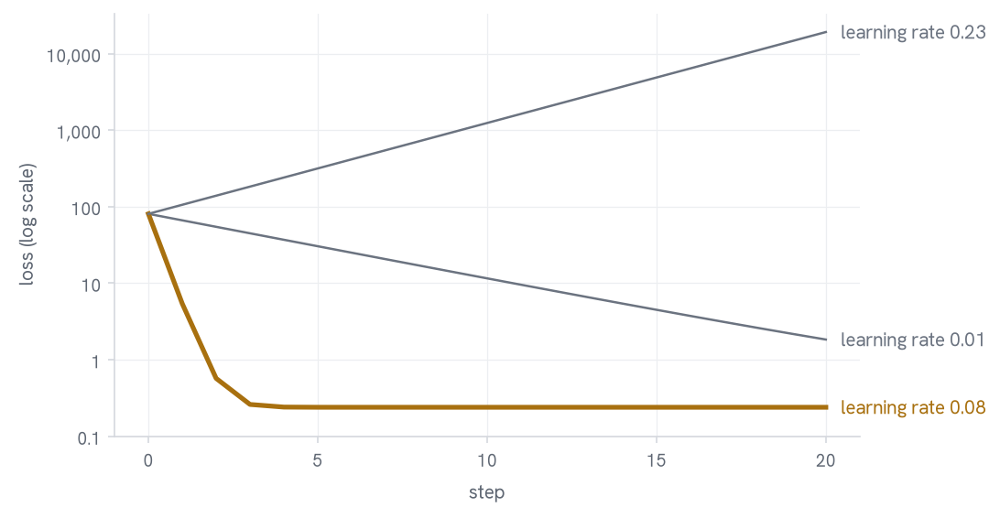

Day 1 of 140 · Phase 1: Learning from data
Loss and gradient descent
A model has parameters; the loss puts a number on its error; gradient descent moves each parameter against the slope, by a step proportional to the slope.
1Notions
The case: three BIXI trips and a one-line model, duration = w × distance. The parameter w reads as minutes per kilometre. Learning means finding the w that is least wrong on all three trips.
The loss
The error is measured by the mean squared error: the average of the squared gaps between the predicted and the actual duration. Squaring makes every gap positive and punishes large errors harder. Each value of w gives a loss: the curve below is shaped like a valley, and the best w sits at the bottom.
One step, by hand
We start from w = 0, with a step size (learning rate) of 0.05.
| Trip | Distance (km) | Duration (min) | Prediction | Error | Error × distance |
|---|---|---|---|---|---|
| A | 1 | 4 | 0 | −4 | −4 |
| B | 2 | 9 | 0 | −9 | −18 |
| C | 3 | 12 | 0 | −12 | −36 |
| Mean | −19.33 |
The slope of the loss is 2 × (−19.33) = −38.67. The new w is 0 − 0.05 × (−38.67) = 1.93 min/km, and the loss goes from 80.3 to 23.0. At the bottom of the valley, w = 58 ÷ 14 ≈ 4.14 min/km, about 14.5 km/h.
The recipe
w ← 0
repeat N times:
errors ← w × distances − durations
slope ← 2 × mean(errors × distances)
w ← w − step × slope
The step size decides everything
Too small, and it takes dozens of steps. Too large, and each step jumps over the valley and the loss climbs back up. Here, the curvature of the loss is 28 ÷ 3 ≈ 9.33: any step larger than 2 ÷ 9.33 ≈ 0.21 makes the descent diverge.
To watch
StatQuest, Gradient Descent, Step-by-Step, from 2:00 to 14:35: a single parameter, the slope of the loss, the step size and when to stop. What to look for: why the steps get shorter near the bottom.
2Demo
The loss as a function of w
The three trips and the model's line
| Step | w (min/km) | Loss |
|---|
Three made-up trips, chosen so they can be computed by hand: A (1 km, 4 min), B (2 km, 9 min), C (3 km, 12 min). In grey, the line of the best w.
3What I did, in my words
I coded the setup simply.

I understood the overall process of gradient descent, especially the mechanics of the gradient of the loss, and how, instead of going value by value (the video's first method), we use the derivative of the loss with respect to the slope and the intercept. That way we can move toward the minimum (global or local, to be seen later). There is of course a question of step size, and sometimes of the number of iterations, which serve as stopping criteria. But overall, the notion of a loss function carries the idea that the loss is a choice, and that the model will exploit its flaws if there are any.
My notebook: jour-001.ipynb.
Sources
-
Video · StatQuest (Josh Starmer)
Gradient Descent, Step-by-Step
2:00 → 14:35
Watch from 2:00 ↗ -
Video · 3Blue1Brown
Gradient descent, how neural networks learn
Chapter 2 of the Deep Learning series
Watch ↗
Notions and demo: the AI assistant. Notebook, figure and words: Akram, code written step by step with the AI assistant. English translation of his words and notebook: the AI assistant.